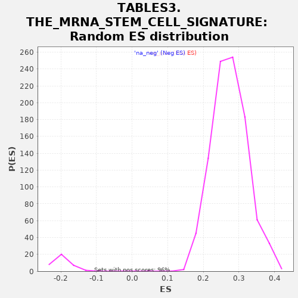

| | | Dataset | al10_v_al2 |
| Phenotype | NoPhenotypeAvailable |
| Upregulated in class | na_neg |
| GeneSet | TABLES3.THE_MRNA_STEM_CELL_SIGNATURE |
| Enrichment Score (ES) | -0.29144466 |
| Normalized Enrichment Score (NES) | -1.4656258 |
| Nominal p-value | 0.0 |
| FDR q-value | 0.066256166 |
| FWER p-Value | 0.097 |
Table: GSEA Results Summary
 Fig 1: Enrichment plot: TABLES3.THE_MRNA_STEM_CELL_SIGNATURE
Fig 1: Enrichment plot: TABLES3.THE_MRNA_STEM_CELL_SIGNATURE
Profile of the Running ES Score & Positions of GeneSet Members on the Rank Ordered List
| PROBE | GENE SYMBOL | GENE_TITLE | RANK IN GENE LIST | RANK METRIC SCORE | RUNNING ES | CORE ENRICHMENT | | 1 | Cit | | | 8 | 0.767 | 0.0376 | No |
| 2 | Cenpf | | | 11 | 0.715 | 0.0735 | No |
| 3 | Hirip3 | | | 33 | 0.490 | 0.0950 | No |
| 4 | Spag5 | | | 67 | 0.349 | 0.1075 | No |
| 5 | Cep192 | | | 80 | 0.331 | 0.1224 | No |
| 6 | Aspm | | | 89 | 0.310 | 0.1368 | No |
| 7 | Ckap2 | | | 107 | 0.287 | 0.1487 | No |
| 8 | Pole | | | 150 | 0.252 | 0.1548 | No |
| 9 | Dtl | | | 183 | 0.225 | 0.1612 | No |
| 10 | Brca2 | | | 196 | 0.221 | 0.1705 | No |
| 11 | Espl1 | | | 219 | 0.201 | 0.1772 | No |
| 12 | Nap1l1 | | | 242 | 0.193 | 0.1836 | No |
| 13 | Pck2 | | | 277 | 0.183 | 0.1875 | No |
| 14 | Palb2 | | | 306 | 0.176 | 0.1919 | No |
| 15 | Pold1 | | | 326 | 0.171 | 0.1976 | No |
| 16 | Atr | | | 351 | 0.163 | 0.2021 | No |
| 17 | Trim37 | | | 354 | 0.163 | 0.2100 | No |
| 18 | Ccdc18 | | | 374 | 0.158 | 0.2150 | No |
| 19 | Cbx6 | | | 385 | 0.155 | 0.2213 | No |
| 20 | Txndc16 | | | 388 | 0.155 | 0.2288 | No |
| 21 | Psrc1 | | | 395 | 0.154 | 0.2357 | No |
| 22 | Haus4 | | | 405 | 0.152 | 0.2420 | No |
| 23 | Picalm | | | 429 | 0.148 | 0.2459 | No |
| 24 | AU020206 | | | 526 | 0.136 | 0.2376 | No |
| 25 | Tiam1 | | | 535 | 0.135 | 0.2432 | No |
| 26 | Immp2l | | | 564 | 0.132 | 0.2454 | No |
| 27 | Plce1 | | | 572 | 0.131 | 0.2510 | No |
| 28 | Isyna1 | | | 663 | 0.122 | 0.2429 | No |
| 29 | Kif20a | | | 722 | 0.117 | 0.2397 | No |
| 30 | Nfic | | | 755 | 0.114 | 0.2405 | No |
| 31 | Mlxip | | | 822 | 0.108 | 0.2355 | No |
| 32 | Irf2bp2 | | | 829 | 0.108 | 0.2400 | No |
| 33 | Zmym1 | | | 882 | 0.104 | 0.2371 | No |
| 34 | Ilf3 | | | 905 | 0.102 | 0.2388 | No |
| 35 | Tbc1d4 | | | 952 | 0.099 | 0.2366 | No |
| 36 | Pde3b | | | 1066 | 0.093 | 0.2234 | No |
| 37 | Tmem209 | | | 1232 | 0.084 | 0.2017 | No |
| 38 | Blnk | | | 1279 | 0.082 | 0.1986 | No |
| 39 | Eri2 | | | 1325 | 0.079 | 0.1955 | No |
| 40 | Wdr90 | | | 1340 | 0.078 | 0.1972 | No |
| 41 | Spice1 | | | 1348 | 0.078 | 0.2000 | No |
| 42 | Alms1 | | | 1367 | 0.077 | 0.2011 | No |
| 43 | Arl4c | | | 1410 | 0.075 | 0.1983 | No |
| 44 | Cdo1 | | | 1435 | 0.075 | 0.1983 | No |
| 45 | Hunk | | | 1464 | 0.073 | 0.1976 | No |
| 46 | Dach1 | | | 1514 | 0.071 | 0.1935 | No |
| 47 | Fads1 | | | 1536 | 0.070 | 0.1937 | No |
| 48 | Qsox2 | | | 1618 | 0.067 | 0.1843 | No |
| 49 | Psd3 | | | 1642 | 0.066 | 0.1840 | No |
| 50 | Aqp4 | | | 1665 | 0.065 | 0.1838 | No |
| 51 | Mcc | | | 1796 | 0.061 | 0.1664 | No |
| 52 | Dtx4 | | | 1889 | 0.057 | 0.1548 | No |
| 53 | Bcl7a | | | 2004 | 0.053 | 0.1395 | No |
| 54 | Phlpp1 | | | 2084 | 0.051 | 0.1296 | No |
| 55 | Dapk2 | | | 2302 | 0.045 | 0.0977 | No |
| 56 | Lamb3 | | | 2348 | 0.043 | 0.0928 | No |
| 57 | Nfia | | | 2365 | 0.043 | 0.0924 | No |
| 58 | Kank1 | | | 2607 | 0.036 | 0.0562 | No |
| 59 | Sesn3 | | | 2620 | 0.036 | 0.0561 | No |
| 60 | Hmbox1 | | | 2744 | 0.032 | 0.0384 | No |
| 61 | Mpzl1 | | | 2752 | 0.032 | 0.0389 | No |
| 62 | Prps2 | | | 2754 | 0.032 | 0.0403 | No |
| 63 | Mdn1 | | | 2768 | 0.031 | 0.0399 | No |
| 64 | Kcnq1 | | | 2781 | 0.031 | 0.0395 | No |
| 65 | Nrtn | | | 2840 | 0.029 | 0.0319 | No |
| 66 | Pds5b | | | 2891 | 0.028 | 0.0254 | No |
| 67 | Poglut1 | | | 2965 | 0.026 | 0.0152 | No |
| 68 | Sema3b | | | 2968 | 0.026 | 0.0162 | No |
| 69 | Zfp318 | | | 3025 | 0.024 | 0.0085 | No |
| 70 | Cnn3 | | | 3043 | 0.023 | 0.0070 | No |
| 71 | Farp1 | | | 3068 | 0.022 | 0.0044 | No |
| 72 | Glrx | | | 3077 | 0.022 | 0.0042 | No |
| 73 | Stk39 | | | 3081 | 0.022 | 0.0049 | No |
| 74 | Cdca7l | | | 3129 | 0.021 | -0.0015 | No |
| 75 | Rassf4 | | | 3277 | 0.016 | -0.0238 | No |
| 76 | Ppp1r9a | | | 3311 | 0.015 | -0.0282 | No |
| 77 | Napepld | | | 3462 | 0.011 | -0.0513 | No |
| 78 | Ces1d | | | 3497 | 0.011 | -0.0562 | No |
| 79 | Atm | | | 3694 | 0.005 | -0.0868 | No |
| 80 | Tubb2b | | | 3700 | 0.005 | -0.0874 | No |
| 81 | Notch1 | | | 3787 | 0.002 | -0.1008 | No |
| 82 | Nr2e3 | | | 3848 | 0.000 | -0.1103 | No |
| 83 | Slc14a1 | | | 3935 | -0.002 | -0.1237 | No |
| 84 | Zfp292 | | | 3947 | -0.002 | -0.1253 | No |
| 85 | Sord | | | 3954 | -0.003 | -0.1261 | No |
| 86 | Sorbs2 | | | 3967 | -0.003 | -0.1279 | No |
| 87 | Fzd7 | | | 4060 | -0.006 | -0.1421 | No |
| 88 | Limk2 | | | 4116 | -0.007 | -0.1504 | No |
| 89 | Prrc2b | | | 4122 | -0.007 | -0.1508 | No |
| 90 | Rnf43 | | | 4152 | -0.009 | -0.1550 | No |
| 91 | Gkap1 | | | 4236 | -0.011 | -0.1675 | No |
| 92 | Slc19a2 | | | 4253 | -0.012 | -0.1694 | No |
| 93 | Ppat | | | 4260 | -0.012 | -0.1698 | No |
| 94 | Lancl1 | | | 4269 | -0.012 | -0.1704 | No |
| 95 | Csnk1e | | | 4295 | -0.013 | -0.1737 | No |
| 96 | Cttnbp2 | | | 4302 | -0.013 | -0.1740 | No |
| 97 | Arhgap39 | | | 4322 | -0.014 | -0.1763 | No |
| 98 | Mecom | | | 4367 | -0.015 | -0.1825 | No |
| 99 | Acvr2b | | | 4395 | -0.016 | -0.1859 | No |
| 100 | Tns3 | | | 4445 | -0.018 | -0.1928 | No |
| 101 | Sorcs2 | | | 4446 | -0.018 | -0.1919 | No |
| 102 | Wwp1 | | | 4447 | -0.018 | -0.1910 | No |
| 103 | Tnfrsf19 | | | 4466 | -0.018 | -0.1929 | No |
| 104 | Bcl2 | | | 4487 | -0.019 | -0.1951 | No |
| 105 | Paics | | | 4518 | -0.020 | -0.1988 | No |
| 106 | Fam92a | | | 4562 | -0.021 | -0.2045 | No |
| 107 | Pbx1 | | | 4575 | -0.022 | -0.2053 | No |
| 108 | Sestd1 | | | 4589 | -0.022 | -0.2063 | No |
| 109 | Ascl2 | | | 4620 | -0.023 | -0.2098 | No |
| 110 | Evl | | | 4624 | -0.023 | -0.2092 | No |
| 111 | Mpzl3 | | | 4679 | -0.025 | -0.2164 | No |
| 112 | Hmga2 | | | 4699 | -0.025 | -0.2181 | No |
| 113 | Tifa | | | 4716 | -0.026 | -0.2193 | No |
| 114 | Slco3a1 | | | 4727 | -0.027 | -0.2196 | No |
| 115 | Mfge8 | | | 4752 | -0.027 | -0.2220 | No |
| 116 | Slc27a2 | | | 4775 | -0.028 | -0.2240 | No |
| 117 | Trim24 | | | 4792 | -0.029 | -0.2251 | No |
| 118 | Phf20 | | | 4797 | -0.029 | -0.2242 | No |
| 119 | Maged1 | | | 4814 | -0.030 | -0.2252 | No |
| 120 | Engase | | | 4848 | -0.031 | -0.2288 | No |
| 121 | Sema7a | | | 4861 | -0.031 | -0.2292 | No |
| 122 | Il17rd | | | 4915 | -0.033 | -0.2358 | No |
| 123 | Kcne3 | | | 5017 | -0.037 | -0.2499 | No |
| 124 | Etv6 | | | 5021 | -0.037 | -0.2485 | No |
| 125 | Clic6 | | | 5036 | -0.037 | -0.2488 | No |
| 126 | Trim44 | | | 5056 | -0.038 | -0.2499 | No |
| 127 | Elmo1 | | | 5074 | -0.039 | -0.2506 | No |
| 128 | Snx10 | | | 5078 | -0.039 | -0.2490 | No |
| 129 | Zfp704 | | | 5088 | -0.040 | -0.2485 | No |
| 130 | Tgif1 | | | 5106 | -0.040 | -0.2491 | No |
| 131 | Yap1 | | | 5204 | -0.044 | -0.2622 | No |
| 132 | Pla2g4a | | | 5212 | -0.045 | -0.2610 | No |
| 133 | Sycn | | | 5222 | -0.045 | -0.2601 | No |
| 134 | Myc | | | 5228 | -0.045 | -0.2587 | No |
| 135 | Ung | | | 5231 | -0.045 | -0.2567 | No |
| 136 | Lpar6 | | | 5244 | -0.046 | -0.2563 | No |
| 137 | Lipt2 | | | 5246 | -0.046 | -0.2541 | No |
| 138 | Vdr | | | 5313 | -0.050 | -0.2620 | No |
| 139 | Zfhx3 | | | 5358 | -0.052 | -0.2663 | No |
| 140 | Grb7 | | | 5371 | -0.052 | -0.2656 | No |
| 141 | Tns4 | | | 5397 | -0.053 | -0.2668 | No |
| 142 | Gpld1 | | | 5451 | -0.056 | -0.2723 | No |
| 143 | Zfp397 | | | 5452 | -0.056 | -0.2695 | No |
| 144 | Axin2 | | | 5464 | -0.057 | -0.2683 | No |
| 145 | Nav1 | | | 5474 | -0.057 | -0.2669 | No |
| 146 | Nedd4 | | | 5523 | -0.060 | -0.2714 | No |
| 147 | Dctd | | | 5607 | -0.064 | -0.2813 | No |
| 148 | Iffo2 | | | 5611 | -0.064 | -0.2785 | No |
| 149 | Efna4 | | | 5617 | -0.064 | -0.2760 | No |
| 150 | Cdca7 | | | 5630 | -0.065 | -0.2747 | No |
| 151 | Agr3 | | | 5647 | -0.066 | -0.2738 | No |
| 152 | Hdac11 | | | 5669 | -0.068 | -0.2737 | No |
| 153 | Lrig1 | | | 5676 | -0.068 | -0.2712 | No |
| 154 | Sfrp5 | | | 5684 | -0.069 | -0.2688 | No |
| 155 | Rgmb | | | 5693 | -0.069 | -0.2666 | No |
| 156 | Sp5 | | | 5709 | -0.070 | -0.2654 | No |
| 157 | Tnfsf10 | | | 5719 | -0.071 | -0.2632 | No |
| 158 | Car12 | | | 5736 | -0.072 | -0.2621 | No |
| 159 | Csad | | | 5836 | -0.079 | -0.2737 | No |
| 160 | Zfp553 | | | 5871 | -0.081 | -0.2750 | No |
| 161 | Mif | | | 5887 | -0.082 | -0.2732 | No |
| 162 | Cd44 | | | 5938 | -0.085 | -0.2768 | No |
| 163 | Smo | | | 6011 | -0.092 | -0.2835 | No |
| 164 | Msi1 | | | 6044 | -0.095 | -0.2837 | No |
| 165 | Utrn | | | 6090 | -0.100 | -0.2858 | No |
| 166 | Cd320 | | | 6127 | -0.104 | -0.2862 | Yes |
| 167 | Adra2a | | | 6148 | -0.106 | -0.2839 | Yes |
| 168 | Shisa2 | | | 6158 | -0.108 | -0.2799 | Yes |
| 169 | Ehf | | | 6161 | -0.108 | -0.2747 | Yes |
| 170 | Nrn1 | | | 6174 | -0.110 | -0.2710 | Yes |
| 171 | Sdc4 | | | 6193 | -0.113 | -0.2682 | Yes |
| 172 | Zbtb38 | | | 6208 | -0.115 | -0.2646 | Yes |
| 173 | Cachd1 | | | 6210 | -0.115 | -0.2589 | Yes |
| 174 | Prelp | | | 6252 | -0.121 | -0.2592 | Yes |
| 175 | Sox9 | | | 6340 | -0.137 | -0.2660 | Yes |
| 176 | Prss23 | | | 6389 | -0.149 | -0.2661 | Yes |
| 177 | Impdh2 | | | 6401 | -0.152 | -0.2601 | Yes |
| 178 | Igfbp4 | | | 6409 | -0.156 | -0.2533 | Yes |
| 179 | Myo1b | | | 6410 | -0.157 | -0.2453 | Yes |
| 180 | H2-Aa | | | 6435 | -0.171 | -0.2404 | Yes |
| 181 | Aqp1 | | | 6437 | -0.172 | -0.2319 | Yes |
| 182 | Acot1 | | | 6444 | -0.175 | -0.2240 | Yes |
| 183 | Sox4 | | | 6474 | -0.203 | -0.2182 | Yes |
| 184 | Lgr5 | | | 6476 | -0.207 | -0.2079 | Yes |
| 185 | Ifitm2 | | | 6491 | -0.220 | -0.1990 | Yes |
| 186 | Klhl24 | | | 6494 | -0.229 | -0.1877 | Yes |
| 187 | Smoc2 | | | 6501 | -0.242 | -0.1763 | Yes |
| 188 | App | | | 6507 | -0.252 | -0.1643 | Yes |
| 189 | Cdk6 | | | 6513 | -0.273 | -0.1513 | Yes |
| 190 | Ifitm3 | | | 6515 | -0.275 | -0.1375 | Yes |
| 191 | H2-Eb1 | | | 6517 | -0.280 | -0.1235 | Yes |
| 192 | Soat1 | | | 6519 | -0.285 | -0.1092 | Yes |
| 193 | Gas6 | | | 6521 | -0.295 | -0.0944 | Yes |
| 194 | Gkn3 | | | 6530 | -0.368 | -0.0771 | Yes |
| 195 | Olfm4 | | | 6534 | -0.484 | -0.0530 | Yes |
| 196 | Slc12a2 | | | 6535 | -0.494 | -0.0280 | Yes |
| 197 | Pdgfa | | | 6536 | -0.552 | 0.0000 | Yes |
Table: GSEA details [plain text format]

Fig 2: TABLES3.THE_MRNA_STEM_CELL_SIGNATURE: Random ES distribution
Gene set null distribution of ES for TABLES3.THE_MRNA_STEM_CELL_SIGNATURE